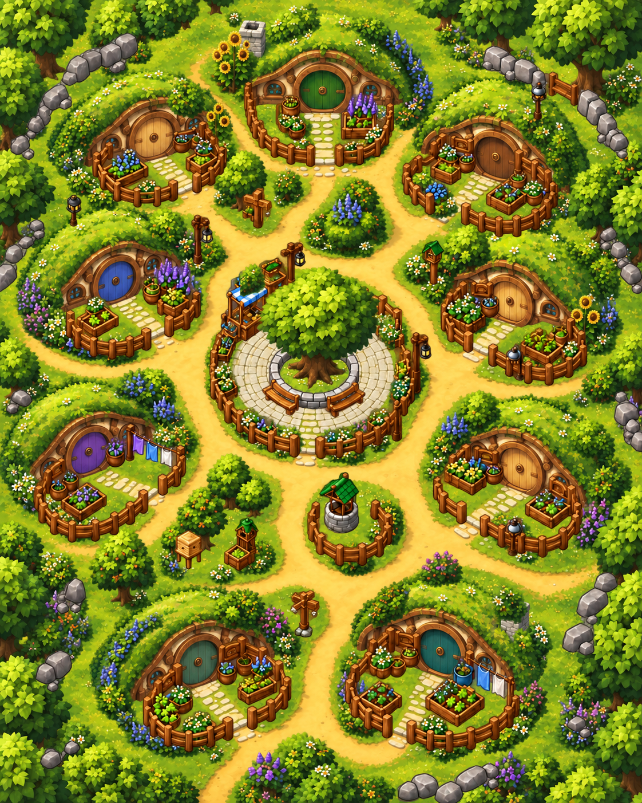

Gather
Each of the 27 plots grows one vegetable each morning. Pick from any available garden; a harvested plot stays empty until the next day.
Village life · Gathering · Dinner parties
Gather vegetables, invite your neighbors, and turn a week of shared dinners into the highest score in the village.
Learn the game ↓A week in Heartleaf is a contest of hospitality. Collect vegetables, arrange dinner with your neighbors, and decide when to host or visit. The villager with the most points after the final day wins.
Each of the 27 plots grows one vegetable each morning. Pick from any available garden; a harvested plot stays empty until the next day.
Be inside a house at 18:00. A party needs its owner and at least one visitor. Everyone eats from the host’s pantry.
Return to your own house by 21:00. Anyone elsewhere loses 3 points, even if they are inside another villager’s house.
| Time | What happens | Plan around it |
|---|---|---|
| 09:00 | Gardens refill; villagers begin at their doorsteps. | Choose a gathering route and possible dinner partners. |
| 09:00–18:00 | Gather, travel, invite, accept invitations, or talk. | Build a pantry if hosting; leave enough time to reach dinner. |
| 18:00 | Every house resolves dinner at the same instant. | Presence matters. An accepted invitation alone does not seat you. |
| 18:00–21:00 | Evening travel continues after the meal. | Head to your own house before curfew. |
| 21:00 | Curfew penalty and daily score tally. | Scores carry over into the next day. |
One village day takes 3 minutes of simulation time: one real second advances the clock by four village minutes. The normal match lasts seven days; custom matches can run up to 28.
The owner must be home and at least one other villager must be inside at the dinner bell. An empty house, a lone host, and villagers outdoors earn no dinner points.
Your carried vegetables become the pantry. First you earn pantry items × visitors. You also join the meal. Hosting empties your inventory; visitors keep theirs.
Dinner has three bite rounds. Each diner can receive one item per round while food remains. Seating is shuffled deterministically. A bite favors vegetable types you have not tasted this week.
A first taste earns 3 points; another bite of a familiar vegetable earns 1. The set of tasted vegetables persists throughout the match.
| Scoring event | Points | Condition |
|---|---|---|
| Hosting | Items in pantry × number of visitors | Owner and at least one visitor are in the house at 18:00. |
| First taste | +3 per bite | First time this villager eats that vegetable type during the match. |
| Repeat taste | +1 per bite | This villager has already tasted that type. |
| Missed curfew | −3 | Not in your own house at 21:00. |
| Winner | Highest accumulated score | After the final day; scores may be negative. |
Ivan, Anton, Yura, Sasha, Maxim, Nikita, Vova, Dima, and Egor each have a house with three garden plots.
Variety matters because every villager tracks their own first tastes. Vegetables left in your inventory carry into later days unless you host dinner.
Invite or accept within 3 tiles. An invitation records intent, but never moves someone or binds them to attend. Talk within 4 tiles in groups of up to four. Gathering and entering a door require being within 1 tile.

A full basket becomes much more valuable when visitors actually arrive. Arrange company early and be home before the bell.
An invitation can save your pantry for another day while letting you collect new tastes from someone else’s meal.
Dinner and curfew are hard deadlines. A great gathering route is only useful if you can still reach the right house.
Rules reviewed on 29 September 2026. This guide describes the source version available on that date; match settings and older replays can differ.